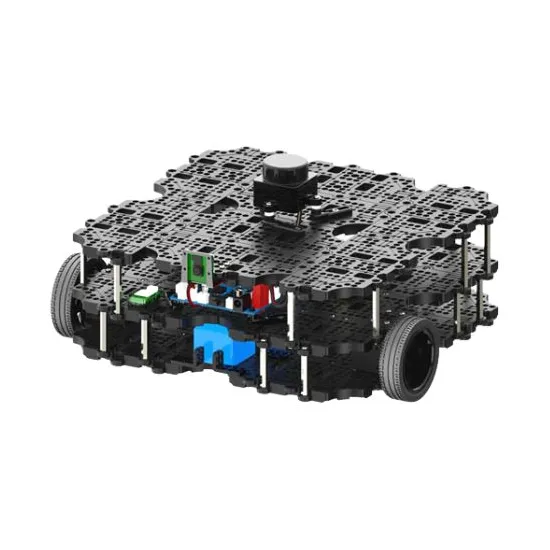

Robotics Engineer — University of Toronto, Spring 2026
Trent Rossos
I build systems that operate in the physical world; autonomous vehicles, robotic arms, exoskeletons, and UAVs. Graduated with a B.A.Sc. in Engineering Science with a robotics major at the University of Toronto, with experience spanning ADAS at Magna Electronics, robotic manipulation at York University, and assistive technology at Toronto Rehab. Additionally, I have a strong background in embedded systems and real-time control, with experience developing firmware for microcontrollers and integrating complex hardware-software systems. Through various course I have learned many robotics fundamentals, including SLAM, motion planning, and control, and have applied these concepts in projects ranging from autonomous drones to wheelchair-mounted robotic arms. I am passionate about building technology that has a positive impact on people's lives, particularly in the realm of assistive robotics and mobility solutions. When I'm not working on robotics projects, I enjoy hiking, working out, and exploring new coffee shops around the city.
Projects and Relevant Experience
Crazyflie Nano UAV Onboard Mapping and Exploration
2026An eight-month undergraduate thesis project implementing a fully onboard mapping and autonomous exploration system for the Bitcraze Crazyflie 2.1 nano quadrotor. The system builds a real-time 2D log-odds occupancy grid entirely on the GAP-8 RISC-V processor, no offboard compute, no external positioning infrastructure, and no ground station in the loop. Sensor data from five time-of-flight ranging modules is packaged by the STM32 flight controller and streamed to the GAP-8 over a custom inter-processor communication layer. The GAP-8 runs Bresenham ray casting to update a 200×200 occupancy grid within its 512KB L2 RAM budget, then executes a frontier-based exploration algorithm to autonomously identify unexplored regions and generate navigation waypoints.

Autonomous Drone Capstone
2026Robotics Engineering Capstone, where an autonomous drone built on PX4 using the Cube Orange autopilot and Jetson Nano for onboard processing, achieved fall detection and april tag tracking. Localization was done using a Vicon motion capture system, with a Kalman Filter fusing IMU and Vicon data for state estimation. The drone performed autonomous takeoff, hover, and landing, demonstrating the ability to track and follow a moving target while avoiding obstacles in a controlled environment.

Mobile Robotics and Perception Labs
2026As part of the Mobile Robtoics and Perception course, I completed a three-part project sequence using the TurtleBot 3 Waffle Pi platform, focused on motion planning, mapping, and localization. In the first lab, I implemented RRT and RRT* path planning algorithms in simulation, developing a custom ROS package to generate and visualize paths in Gazebo. The second lab involved real-world calibration and occupancy grid mapping using the robot's LiDAR and IMU sensors, with ROS nodes for sensor fusion and map generation. The final lab focused on localization, where I implemented a particle filter to fuse odometry and LiDAR data for accurate pose estimation, demonstrating successful navigation in both simulated and physical environments.

Add screenshot